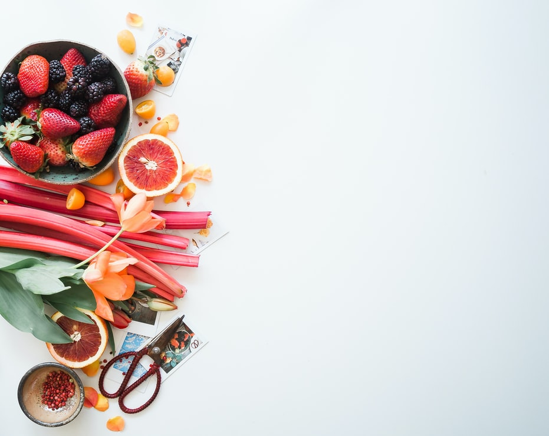

Colorful & comforting seasonal recipes for savory dishes, sweets and cocktails.
Welcome! The recipes on Chase the Flavors balance using fresh, colorful seasonal ingredients and creating satisfying, comforting experiences. They also champion make-it-work techniques, finding inspiration in farmers market hauls and using whatever ingredients are overflowing the pantry.
Chase the Flavors is all about making the most of seasonal flavors, finding resourceful best practices, enjoying time spent in the kitchen/bar and creating handmade recipes to share with the ones you love. It's for me an adventure in developing better culinary practices and enhancing the experiences I have with flavor, sharing recipes along the way, here and in person with the ones I love. It's a place to chase delicious perfection and learn a whole lot along the way. Cheers to the journey. May your kitchen be a space full of memorable successes, shared joy, laughter, and gratefulness. Thank you for stopping by. Get in touch.